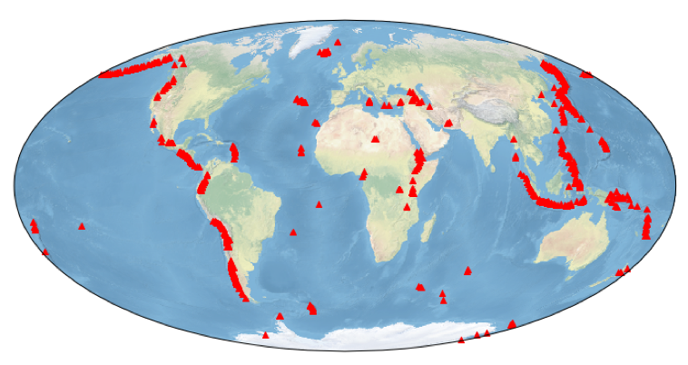

LAB 5 - Map of active volcanoes#
Here is an example of plotting a map of active volcanoes using data online at Oregon State University.

At the end of this script you will produce a map just like the one shown here.
Resources you will use.#
This notebook makes use of a couple of packages that might come in handy another time. The maps
are made by cartopy which is a mapping tool written by the Meteorological Office in the UK (and
which happens to be really good a plotting satellite data). The pandas package is a database
tool that is really very good at manipulating tables of different types of data, selecting, sorting,
refining and so on.
%matplotlib inline
import json
from lxml import html
import cartopy.crs as ccrs
import numpy as np
import pandas as pd
import matplotlib.pyplot as plt
chartinfo = 'Author: Meghan Miller | Data: Volcano World - volcano.oregonstate.edu'
This next section reads the data from the Oregon State University database at: http://volcano.oregonstate.edu/oldroot/volcanoes/alpha.html
pdurl = 'http://volcano.oregonstate.edu/oldroot/volcanoes/alpha.html'
xpath = '//table'
tree = html.parse(pdurl)
tables = tree.xpath(xpath)
table_dfs = []
for idx in range(4, len(tables)):
df = pd.read_html(html.tostring(tables[idx]), header=0)[0]
table_dfs.append(df)
df_volc = pd.concat(table_dfs, ignore_index=True)
Clean up the data to make sure the typos and missing information are not propogated into your database
def cleanup_type(s):
if not isinstance(s, str):
return s
s = s.replace('?', '').replace(' ', ' ')
s = s.replace('volcanoes', 'volcano')
s = s.replace('volcanoe', 'Volcano')
s = s.replace('cones', 'cone')
s = s.replace('Calderas', 'Caldera')
return s.strip().title()
df_volc['Type'] = df_volc['Type'].map(cleanup_type)
df_volc['Type'].value_counts()
Now determine the number of volcanoes in the database.
df_volc.dropna(inplace=True)
len(df_volc)
Now select the volcanoes that are above sealevel
df_volc = df_volc[df_volc['Elevation (m)'] >= 0]
len(df_volc)
Make a nice table of the first 10 volancoes from the information that you grabbed out of the Oregon State University website on volcanoes
print(len(df_volc))
df_volc.head(10)
Determine the number of each type of volcanoes from this list and output this information to the screen.
df_volc['Type'].value_counts()
df_volc.dropna(inplace=True)
len(df_volc)
df = df_volc[df_volc['Type'] == 'Stratovolcano']
Create a simple scatter plot map of the stratavolcanoes
fig=plt.figure(figsize=(12,8))
ax = fig.add_subplot(1,1,1, projection=ccrs.Mollweide())
ax.stock_img()
ax.annotate('Stratovolcanoes of the world | ' + chartinfo, xy=(0, -1.04), xycoords='axes fraction')
ax.scatter(df['Longitude'].array,df['Latitude'].array, color='red', linewidth=1, marker='^', transform=ccrs.PlateCarree())
plt.show()